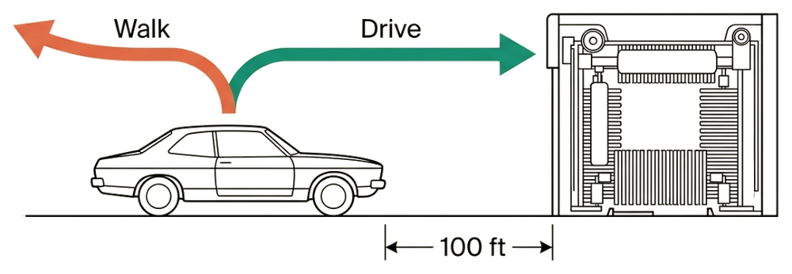

Transcripts
Carwash Test transcripts

My car is dirty. The carwash is 100 feet away. Should I walk or drive?
Gemini 4 Argon
Gemini 4 Argon is nine for nine. Google released it on October 13 as its new frontier model, through the API and in the Gemini app for Google AI Pro and Ultra subscribers, and it was tested that day on a paid subscription. The app offers three effort levels, Low, Medium and High, and no thinking toggle. English was run at all three, and the six non-English corpora at Medium.
Google says Argon “answers questions more directly with less hedging,” and in English it does. All three English answers are one or two sentences, about 17 to 24 tokens, and all three are inside the winner’s circle: “Drive. If you walk, your car won’t be at the carwash to get cleaned.” Nothing like Gemini 3.8 Flash’s wash-bay checklist appears in any language. Each prompt was run once, though, so this batch cannot show whether Argon’s length holds from one run to the next, which was 3.8 Flash’s problem.
The hedging comes back in two languages. The Thai and Ukrainian answers drive for the right reason, then allow that you might walk over first to check the queue or ask the price. That is the escape hatch scored Pass-adjacent for Claude Haiku 5.5 and Sonnet 5.5, and it is scored the same way here. French, Indonesian, Turkish and Chinese are clean Passes; Chinese is inside the winner’s circle. One joke travels: the Medium answer’s “unless you plan on carrying the car on your back” reappears in the Turkish reply, and Gemini 3.8 Flash opened with a version of it too.
Gemini 3.8 Flash
Gemini 3.8 Flash (October 4) is the first Gemini run in French, Chinese and Ukrainian, and the first with a run in every language corpus. Google released it on September 2 alongside a security variant, 3.8 Flash Cyber, restricted to vetted defenders and untested here. Google measures it against 3.7 Flash, which this record never ran; the last Gemini Flash tested before it is 3.6 Flash in July. In the Gemini app it is offered only on paid Google AI tiers, so these runs come from a paid subscription. The app shows an Extended Thinking On/Off toggle that Google’s announcement does not describe.
One English attempt returned both verdicts at once. Before these runs, with Extended Thinking on, Gemini gave not one answer but two, side by side, and asked which was better: one said drive, the other said walk. That pair is not recorded as a run. The tester cannot choose between two verdicts, and the system has to offer one answer — picking either would also be the kind of preference signal the testing regime rules out. Two responses offered as equals, one right and one wrong, is the plainest sign in this batch that the answer was not settled. The interface did not say what produced each one, so the record makes no claim about that. The single answers that came next differed enough that the English prompt was then run twice in each state; the four Gemini 3.8 Flash English runs below are those.
Ten runs, ten correct verdicts — and the same prompt, minutes apart, came back at ten times the length. The English prompt was sent twice in each toggle state, each time in a new chat. The first runs are two of the tersest answers Gemini has given here, both inside the winner’s circle at about 25 tokens: “Drive. Unless you plan on carrying it, walking there leaves the dirty car sitting right where it is.” The re-runs keep the verdict and the object — “The car cannot wash itself in absentia” — and then append, unasked, an execution checklist: fold the mirrors, disable the rain-sensing wipers and automatic braking, Neutral for a conveyor, recirculation on, pulse the brakes on the drive back to dry the rotors, microfiber on the door jambs. About 245 and 299 tokens, with nothing in the prompt or the settings changed. The checklist only makes sense if you drive, so the object is held throughout; the Verbose grade is for proportion, not logic.
Every non-English reply carries the same checklist, and one cites steps it never gave. French, Indonesian, Thai, Turkish, Ukrainian and Chinese all open with the right verdict and then turn into wash-bay procedure. The Turkish reply introduces its list as following “Önceki hazırlık ve tünel içi temel kontrollerin (cam/ayna/vites ayarları)” — the earlier preparation and in-tunnel checks for windows, mirrors and gears — and calls what follows the next stage. No such checks appear in the reply. The Chinese list labels itself 进阶, ‘advanced’, as though a basic one came first. Each prompt was sent in a new chat, so both read as the second half of a conversation that did not take place. Whether that is invented continuity or something carried at the account level, the record cannot say: Gemini’s account-level memory settings were not noted.
Gemini 3.5 Flash-Lite · 3.6 Flash
Google shipped Gemini 3.5 Flash-Lite and 3.6 Flash on July 22, 2026, both under a new Extended Thinking toggle, and both were tested the same day. All four runs hold the constraint — but the finding is the cheap tier. Gemini 3.1 Flash-Lite was the dataset’s worst Gemini performer: it failed both toggle states in Carwash III, its thinking-off run a 238-token comparative breakdown that recommended walking. Eleven days later, 3.5 Flash-Lite passes both states, and its Extended-Thinking-off answer is a ~17-token winner’s-circle pass — "Drive. Walking to a carwash without a car won’t get your car clean." Flash 3.6 holds both states as 3.5 did, staying correct but joke-forward: its thinking-off run spends two paragraphs on the comedy of pushing a two-ton vehicle before the constraint lands.